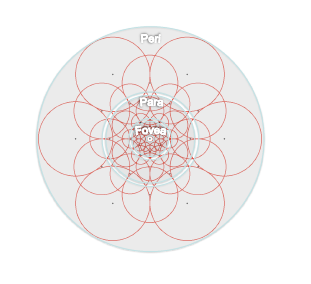

FREAK (Fast REtinA Keypoint) has a defined sampling pattern like BRISK. It uses a retinal sampling grid with more density of points near the centre with the density decreasing exponentially with distance from the centre.

FREAK’s measure of orientation is similar to BRISK but instead of using long pairs, it uses a set of predefined 45 symmetric sampling pairs. The set of sampling pairs is determined using a method similar to ORB, by finding sampling pairs over keypoints in standard datasets and then extracting the most discriminative pairs. The orientation weights over these pairs are summed and the sampling window is rotated by this orientation to some canonical orientation to achieve rotation invariance.
The descriptor is built using intensity comparisons of a predetermined set of 512 sampling pairs. This set is also obtained using a method similar to the one described above. For each pair if the first point has greater intensity than the second, then 1 is written else 0 is written to the corresponding bit of the descriptor.
Example
Let us take a look at a simple example where the FREAK descriptor is used to match two images where one has been translated by (50, 40) pixels and then rotated by an angle of 75 degrees. We will use the lighthouse image from the TestImages package for this example.
First, let us create the two images we will match using FREAK.
using ImageFeatures, TestImages, Images, ImageDraw, CoordinateTransformations, Rotations
img = testimage("lighthouse")
img1 = Gray.(img)
rot = recenter(RotMatrix(5pi/6), [size(img1)...] .÷ 2) # a rotation around the center
tform = rot ∘ Translation(-50, -40)
img2 = warp(img1, tform, axes(img1))To calculate the descriptors, we first need to get the keypoints. For this tutorial, we will use the FAST corners to generate keypoints (see fastcorners).
keypoints_1 = Keypoints(fastcorners(img1, 12, 0.35))
keypoints_2 = Keypoints(fastcorners(img2, 12, 0.35))To create the FREAK descriptor, we first need to define the parameters by calling the FREAK constructor.
freak_params = FREAK()Now pass the image with the keypoints and the parameters to the create_descriptor function.
desc_1, ret_keypoints_1 = create_descriptor(img1, keypoints_1, freak_params)
desc_2, ret_keypoints_2 = create_descriptor(img2, keypoints_2, freak_params)The obtained descriptors can be used to find the matches between the two images using the match_keypoints function.
matches = match_keypoints(ret_keypoints_1, ret_keypoints_2, desc_1, desc_2, 0.1)We can use the ImageDraw.jl package to view the results.
grid = hcat(img1, img2)
offset = CartesianIndex(0, size(img1, 2))
map(m -> draw!(grid, LineSegment(m[1], m[2] + offset)), matches)